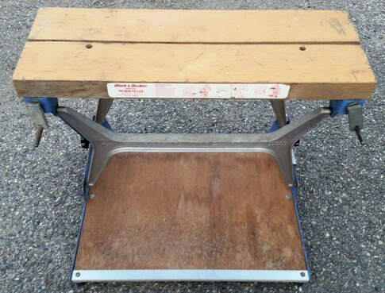
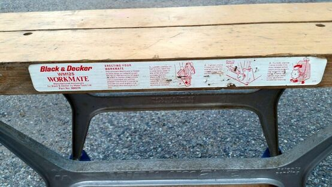
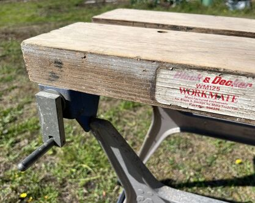
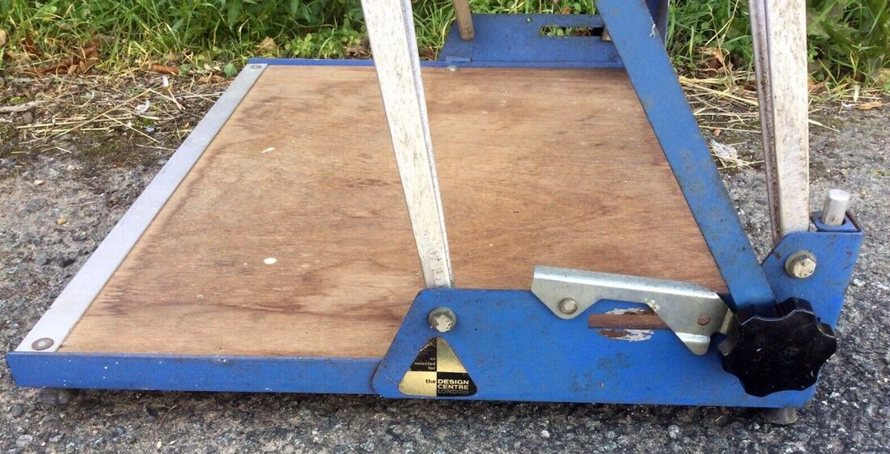
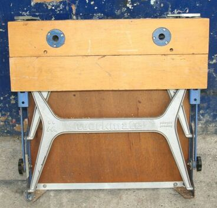

The UK model Workmate WM125 has the Black & Decker name on its front label but it was not manufactured by Black & Decker.
The original production of the Workmate (no model number) was by Ron Hickman's own company, Mate Tools Limited starting in 1968. By 1972 Black & Decker had bought the manufacturing and distribution rights from Hickman. While the "Mark II" Workmate was being developed for Black & Decker, Mate Tools continued manufacturing the Workmate into 1972, but supplied that final production to Black & Decker who sold them under their own name with the model number WM125. (Don't confuse this original UK Workmate from 1972 with the North American WM125 sold in the 2000's.)
The WM125 had only minor changes during its production run. It has a different safety catch than the pre-WM125 Workmate. At some point during production, they changed the vise jaws from 1-3/4" solid birch to 1-3/4" plywood. I have seen some WM125's with one or two inset round blue metal plates that appear to be for the use of a traditional woodworker's holdfast.
Other than those changes, everything on my page about the Mate Tools Workmate applies to the WM125 as well.
Black & Decker Workmate WM125



Black & Decker's label for the WM125


WM125 with plywood jaws


Unpainted steel safety catch next to the right-hand knob


Metal inserts allow use of a holdfast